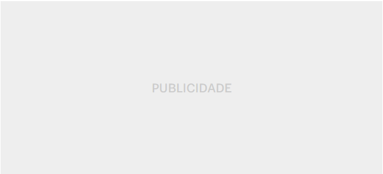
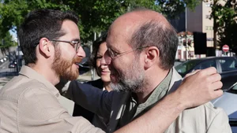
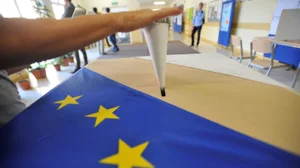
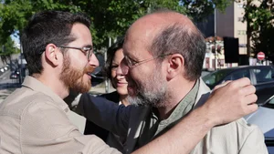
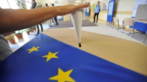
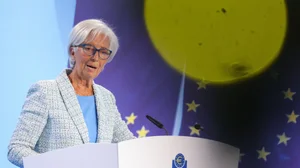
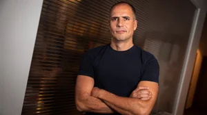
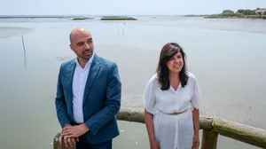

Texto de Inês André Figueiredo, Mariana Lima Cunha, João Francisco Gomes, José Carlos Duarte, Miguel Santos Carrapatoso, Rui Pedro Antunes e Vasco Maldonado Correia, ilustração de Rodrigo Mendes
Os candidatos foram desafiados a fazer a última chamada do dia para o jornalista do Observador que acompanha a comitiva. Muitas foram já de madrugada. No carro, no hotel ou a caminho de casa.
07 jun. 2024, 16:55
1
Oferecer
índice
- Marta Temido. A candidata que não gosta de “violência” (nem de instabilidade) e toma banhos frios para relaxar
- Tânger Corrêa. Vitória por 4 ou 5, a “malita” e o TikTok para a “rapaziada mais nova”
- João Cotrim Figueiredo. Os preparativos para a festa da IL e as malas prontas para Bruxelas
- Catarina Martins. A ajuda da Marisa e do Francisco na campanha menos exigente que outras
- João Oliveira ainda não tem planos familiares para depois do dia 9 de junho, mas as eleições são já “tema de brincadeira” entre as filhas e as amigas
- Francisco Paupério. Doar os Benefícios do IRS Jovem, ver Jogos do Sporting com emigrantes e o destino do Rui Tavares de cartão
- Pedro Fidalgo Marques. O candidato...

Marta Temido confessa ao Observador que fala com a família e toma um banho frio sempre que chega ao hotel no final do dia de campanha. A candidata do PS acusa Sebastião Bugalho de ser um jovem com “ideias velhas”, mas ressalva que não se trata de um ataque pessoal, já que os ideais são do partido. Tânger-Corrêa recusa falar sobre teorias da conspiração como o plano com amigos americanos, embora confesse estar habituado a guardar informações confidenciais. O candidato do Chega diz que esta é a última campanha que está disponível para fazer e que agora só quer pegar na “malita” e ir para Bruxelas. O Observador desafiou os oito líderes de partidos com assento parlamentar para uma última chamada do dia: sete aceitaram e só Sebastião Bugalho, da AD, não teve agenda para gravar o telefonema.
Assine o Observador a partir de 0,18€/ dia
Não é só para chegar ao fim deste artigo:
- Leitura sem limites, em qualquer dispositivo
- Menos publicidade
- Desconto na Academia Observador
- Desconto na revista best-of
- Newsletter exclusiva
- Conversas com jornalistas exclusivas
- Oferta de artigos
- Participação nos comentários
Apoie agora o jornalismo independente
Oferta limitada
Apoio ao Cliente | Já é assinante?
Inicie sessãoRECOMENDAMOS
 



Reportagem Observador
No Chiado, Montenegro piscou à esquerda e direita
Eleições Europeias
Rui Tavares diz que campanha do Livre foi "forte"
Eleições Europeias
Como vão ser divulgados resultados nas europeias?
Eleições Europeias
16 deputados-estrela para acompanhar neste novo PE
POPULARES


Justiça
Nuno Rebelo de Sousa é o próximo alvo
55BCE
Baixa de juros deve ser mais lenta do que previsto
Vichyssoise
"Estou como o Rui Tavares, não sei em quem votar"
107Saúde
SNS. Novo diretor-executivo ainda não foi nomeado
ÚLTIMAS

Reportagem Observador
Pedro Nuno Santos: "Governo esconde problemas"
Noticiário
As notícias das 21h
Eleições Europeias
PAN pede aos eleitores para confiar no partido
Basquetebol